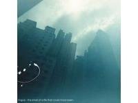

| Artist: | Lingua |
| Title: | The Smell Of A Life That Could Have Been |
| Label: | Rebel Monster Records RMR 7183 2 |
| Length(s): | 44 minutes |
| Year(s) of release: | |
| Month of review: | [07/2008] |
| 1) | May Crayons Guide The Sheep | 4.40 |
| 2) | You Wonder Why You Still Wonder Why | 5.31 |
| 3) | Out Of Faces | 5.52 |
| 4) | Control Yourself | 4.54 |
| 5) | Constant State Of Puttra | 6.02 |
| 6) | Aftermath | 4.40 |
| 7) | No Footing | 3.35 |
| 8) | I Have No Human Me | 1.13 |
| 9) | Transparent Barriers | 7.29 |
Ah, but seriously, the semblance is very strong. And as the opening track moved into the chorus, I had to stop myself from continuing on into Anathema's Flying. Lingua's style is very close to that exhibited by Anathema on their last couple of offerings. The moments of quiet are less present, less fragile, that's a fact. They also threw in some harder vocals. And by chafing of a bit on the tranquil side and adding a bit on the stronger side the sound is altered somewhat.
As the album progresses the style is no longer purely Anathema, with the addition of influences more raw. Aftermath, for instance, moves towards a stoner style with Linkin Park type vocals. This doesn't change the fact, however, that the band fail to develop an original sound, staying too close to other band's sounds. The combination of compositional strength and playing ability create a result that is worthwhile, though.
At the end of the day coming up with songs that are so close to other people's work, especially Anathema, and, to a lesser degree, Tool, is not just testimony of a lack of originality. It also testimony of a tremendous ability in building songs, in creating and abating tension.